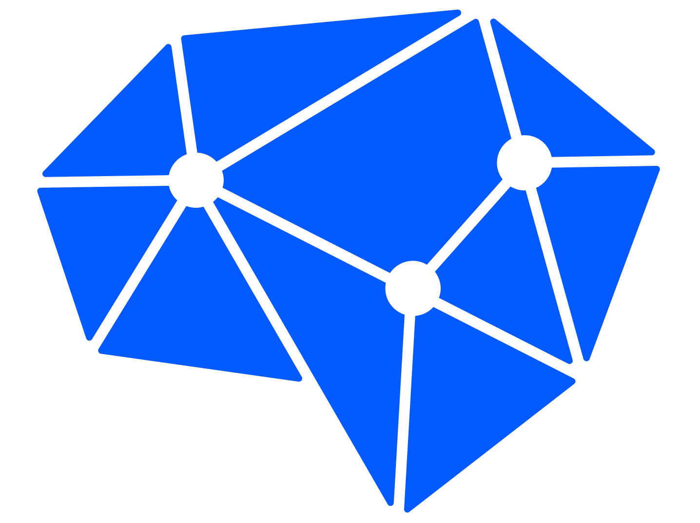
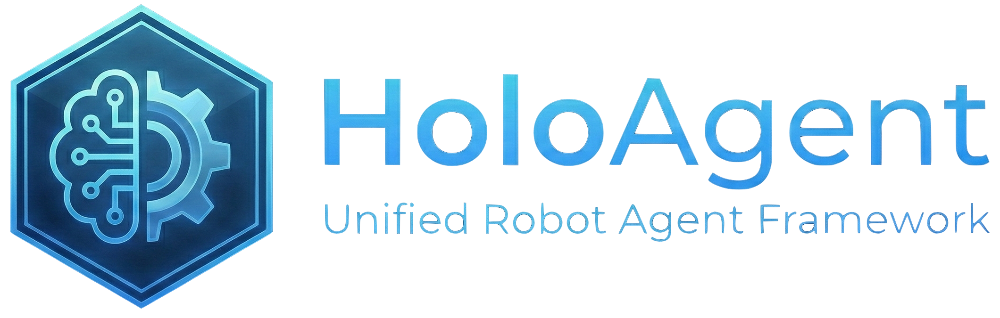

Navigation and Dance Coordination
Heterogeneous robots share task context through the framework while combining mobile navigation, execution monitoring, and expressive humanoid motion.


1Horizon Robotics 2D-Robotics Robotics
*Equal contribution †Corresponding: Liu Liu (nemo.liu@horizon.auto)
A unified embodied agent framework that converts language instructions into executable skill graphs, grounds them in persistent 3D memory, and monitors real-world robot execution for feedback-driven recovery.
HoloAgent-0 narrows the embodiment gap between digital LLM agents and real-world robots, where physical execution is continuous, embodiment-dependent, uncertain, and safety-constrained. The system organizes heterogeneous robot models and controllers through three coupled layers: Embodied AgentOS for planning, scheduling, monitoring, and re-planning; 3D spatial memory for physical-world grounding; and embodied skills for executable robot action. Together, these layers make long-horizon physical skills composable, observable, and verifiable.
Embodied AgentOS converts natural-language instructions into executable skill graphs, schedules robot resources, monitors execution, and triggers clarification or re-planning from runtime feedback. Through a ROS2 command/status bus, it closes the loop between spatial retrieval, skill-graph planning, execution monitoring, memory updates, and feedback-driven recovery.

These demonstrations show HoloAgent-0 deployed on real hardware across motion generation, object search, cross-robot coordination, and mobile manipulation. The videos highlight how monitored skills, spatial memory, and runtime feedback support closed-loop execution in physical scenes.
Heterogeneous robots share task context through the framework while combining mobile navigation, execution monitoring, and expressive humanoid motion.
The framework decomposes long-horizon mobile manipulation into navigation, grasping, placement, verification, and recovery steps.
The robot enters an unseen environment, actively explores reachable space, expands 3D memory online, and updates the scene graph for later navigation and search.
A humanoid robot follows open-ended human commands, freely navigating the environment and executing corresponding embodied actions.
Powered by a multimodal agent brain and a full-stack robot skill library, the system brings large models into the physical world. The robot understands language, reasons over 3D space, navigates autonomously, communicates naturally, and turns human intent into long-horizon physical action.
A robot guide provides natural-language workspace assistance, leading users to destinations, answering intent-driven requests, and adapting its route through spatial memory.
The Skill Layer exposes executable robot capabilities as typed, monitored interfaces rather than low-level controls. Navigation, perception, manipulation, whole-body motion, interaction, and cross-embodiment coordination backends bind task intent to specific robot embodiments while reporting progress, failure modes, safety state, and recoverability for verification and online recovery.
Speech, perception, detection, localization, and verification connect human intent with runtime visual evidence.
Memory-grounded navigation retrieves candidate places and objects, selects viewpoints, verifies progress online, and updates task state from feedback.
Pick, place, open, hand-over, push, fold, and grasp-anything skills combine task intent, visual observations, embodiment priors, and semantic memory.
Reference tracking, velocity control, posture adjustment, expressive motion, and recovery provide monitored whole-body control for humanoids.
Heterogeneous robots share memory records, typed skill calls, and status events while preserving platform-specific sensing, actuation, safety, and recovery constraints.
The Memory Layer provides spatial and temporal memory for HoloAgent-0. Spatial memory converts sensor streams into a persistent 3D world representation for grounding, localization, navigation, and manipulation, including geometry, topology, occupancy, robot pose, open-vocabulary semantic instances, and a hierarchical multimodal scene graph. Temporal memory records goals, plan state, execution and recovery traces, and outcome summaries so AgentOS can retrieve current world state, task history, and recent execution evidence.
Maintains coordinate frames, robot pose, dense geometry, topology, occupancy, traversability evidence, and localization indices for embodied skills.
Lifts 2D foundation-model features onto geometry memory and associates observations with persistent language-queryable 3D instances.
Organizes floors, rooms, views, and objects for room-, view-, and object-level grounding, verification, and reasoning.
Records goals, plan state, status events, verification results, recovery decisions, and updates affected spatial records after execution.
The evaluation covers spatial memory, long-horizon navigation, and closed-loop execution. Quantitative experiments test semantic mapping and the HoloAgent-Nav navigation stack, while real-robot deployments show the same AgentOS runtime composing humanoid motion, object search, cross-robot coordination, and mobile manipulation through monitored skills.
The AgentOS-wrapped navigation stack reaches the strongest simulated success rate under the HM3D-ObjNav protocol.
Feedback-driven execution improves path efficiency over the slow-reasoning FSR-VLN reference baseline.
Real-robot goal reaching succeeds under the strict 1.0 m physical-apartment threshold.
Top-5 candidate retrieval and monitored execution remain strong under the same strict threshold.
HoloAgent-0 is an early step toward full-stack robot-agent systems that connect language-level reasoning, embodied execution, persistent memory, and safe evaluation. Its current limitations point toward instruction-aligned robot foundation models, broader embodiment support with full-stack humanoid skills, and code generation for robot evolution.
Future robot foundation models should expose language-aligned, composable action spaces that AgentOS can schedule, monitor, and verify.
AgentOS should coordinate sensing, actuation, safety, mobility, object-centric navigation, manipulation, interaction, and recovery across platforms.
Coding agents can generate robot actions and execution policies from task intent, robot APIs, and environment context, while EmbodiedGen-style digital twins validate them before real-world deployment.
@misc{holoagent2026holoagent0,
title = {HoloAgent-0: A Unified Embodied Agent Framework with 3D Spatial Memory},
author = {Zhou, Xiaolin and Liu, Liu and Xiao, Tingyang and Feng, Wei and Fu, Fa and Meng, Xinrui and Wang, Xinjie and Han, Jialiang and Yu, Boyang and Du, Yun and Sui, Wei and Su, Zhizhong},
year = {2026},
eprint = {2606.23565},
archivePrefix = {arXiv},
primaryClass = {cs.RO},
url = {https://arxiv.org/abs/2606.23565},
}